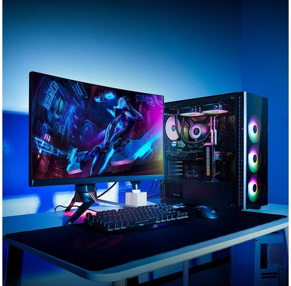
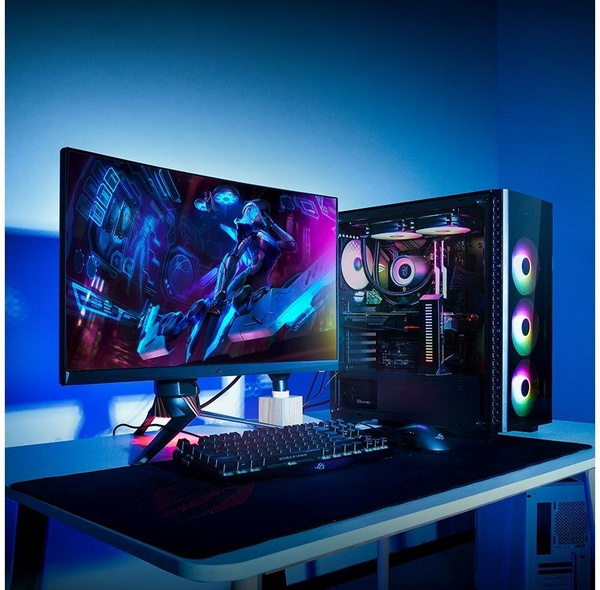

Добро пожаловать!
Этот сайт посвящён развитию вычислительной техники от древнейших инструментов до современных компьютеров. Здесь вы сможете проследить путь эволюции технологий, узнать о важнейших изобретениях и людях, которые внесли вклад в создание вычислительных машин.

 

«Первый электронный компьютер ENIAC весил 27 тонн.»
Основные этапы развития
Древние и механические устройства
Электромеханические устройства
Поколения ЭВМ
Персональные компьютеры